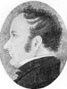
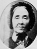
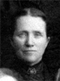
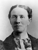

|
John Fielding 
and Rachel Ibbotson |
----> |
 |
Joseph Fielding
Born 26 MAR 1797 Honiden,Bedfordshire,England
Died 19 DEC 1863 Salt Lake City, Utah
Hannah Greenwood
Born 4 SEP 1818 Bolton,Lancashire,England
Died 9 SEP 1877 OGDEN,Weber,Utah
Married 11 JUN 1838 Preston,Lancashire,England
Joseph also married Mary Ann Peake 23 Jan 1846 Nauvoo, Hancock, IL
|
|
Thomas Greenwood
and Ellen Haslam |
Children:
 |
Rachel Fielding 
Born 27 JUN 1839 Preston,Lancashire,England
Died 20 JUL 1914 OGDEN,Weber,Utah
Married
William Walton Burton 28 MAR 1856 Endowment House,Salt Lake City, Utah
The 1st child of Joseph Fielding and Hannah Greenwood
|
 |
Ellen Fielding
Born 9 FEB 1841 Preston,Lancashire,England
Died 8 MAR 1906 OGDEN,Weber,Utah
Married
William Walton Burton 2 NOV 1862 Salt Lake City, Utah
The 2nd child of Joseph Fielding and Hannah Greenwood
|
|
Heber Fielding
Born 20 JUL 1843 Nauvoo,Hancock,Illinois
Died 15 APR 1866
Married
Hannah Elizabeth Heward 25 MAY 1888
The 3th child of Joseph Fielding and Hannah Greenwood
|
* |
Joseph Greenwood Fielding
Born 13 JUL 1846 Nauvoo,Hancock,Illinois
Died 6 MAR 1866
The 4th child of Joseph Fielding and Hannah Greenwood
|
* |
Hyrum Thomas Fielding
Born 29 MAR 1847 Winter Quarters,Douglas,Nebraska
Died 4 AUG 1847 Winter Quarters,Douglas,Nebraska
The 5th child of Joseph Fielding and Hannah Greenwood
|
* |
Hannah Alice Fielding
Born 20 MAY 1849 Salt Lake City, Utah
Died 8 APR 1857
The 6th child of Joseph Fielding and Hannah Greenwood
|
 |
Sarah Ann Fielding
Born 19 MAY 1851 Salt Lake City, Utah
Died 30 NOV 1938 Afton,Lincoln,Wyoming
Married
William Walton Burton 23 MAY 1870 Salt Lake City, Utah
The 7th child of Joseph Fielding and Hannah Greenwood
|